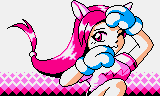

sports_martial_arts
MICO // ARCHIVO DE LUCHADORA
Mico es una luchadora de pelo rosa con orejas de gato y una actitud vivaz y traviesa en Queen Fighter 2000[cite: 10]. Su estilo es sumamente veloz y ofensivo[cite: 10].
history
BIOGRAFÍA E INSPIRACIÓN

SPRITE_PREVIEW // MICO
Su diseño y movimientos están basados en Leona Heidern (de SNK Vs. Capcom)[cite: 10], integrando sus distintivos cortes de energía, ataques aéreos y maniobras de corte veloz adaptadas al motor del juego portátil[cite: 10].
bolt
ESTILO DE COMBATE Y MOVIMIENTOS ESPECIALES
Mico destaca por su agresividad con cargas sorpresa y ataques de corte aéreo. A continuación se detallan sus comandos traducidos[cite: 10]:
- Lanzador bálticoAtrás, Adelante + B[cite: 10]
- I-SlasherAbajo, Arriba + B[cite: 10]
- Bomba de pendientesMedio círculo hacia adelante + B[cite: 10]
- Destripador lunarAtrás, Adelante + A[cite: 10]
- X-CaliberAbajo, Arriba + A[cite: 10]
- V-SlasherCuarto de círculo adelante, medio círculo atrás + B (en el aire) [Movimiento Definitivo][cite: 10]